Наши проекты
Реконструкция тепловой магистрали №17а на участке от УЗ-34-39 до НО-247 в г. Волгодонске.
Выполнение проектной документации – 2014г.
Реализация – 2015г.
Краткое описание объекта. Участок тепловой сети прокладывается в г. Волгодонске по ул. Гагарина. Собственность – ООО «Волгодонские тепловые сети». Предназначены для теплоснабжения жилых, бытовых и производственных потребителей центральной части города общей протяженностью 628,7тр.м. Диаметр трубопроводов – Ду400. Трубы стальные с тепловой изоляцией из ППУ с защитной оболочкой из ПЭ с применением системы ОДК. Подключенная нагрузка от УЗ-34-39 до НО-247 – до 40,0 Гкал/час. Система теплоснабжения – двухтрубная, работающая по температурному графику 104/59℃ с рабочим давлением в системе 1,6 МПа. Способ прокладки – бесканальный.


Техническое перевооружение участка теплотрассы по ул. Зорге от ТК 127/5 до ТК 618 в г. Ростове-на-Дону.
Выполнение проектной документации – 2015г.
Реализация – 2016г.
Краткое описание объекта. Участок тепловой сети прокладывается в г. Ростове-на-Дону по ул. Рихарда Зорге. Собственность – ООО «Ростовские тепловые сети». Предназначены для теплоснабжения жилых, бытовых и производственных потребителей Западной части города общей протяженностью 1125,0тр.м. Диаметр трубопроводов – Ду500. Трубы стальные с тепловой изоляцией из ППУ с защитной оболочкой из ПЭ с применением системы ОДК. Присоединенная мощность – 27,332 Гкал/час. Система теплоснабжения – двухтрубная, работающая по температурному графику 110/70℃ с рабочим давлением в системе 1,6 МПа. Способ прокладки – бесканальный.


Техническое перевооружение участка теплотрассы по просп. Королева от ТК 2518 до ТК 2526 в г. Ростове-на-Дону.
Выполнение проектной документации – 2015г.
Реализация – 2016г.
Краткое описание объекта. Участок тепловой сети прокладывается в г. Ростове-на-Дону по проспекту Королева. Собственность – ООО «Ростовские тепловые сети». Предназначены для теплоснабжения жилых, бытовых и производственных потребителей Северной части города общей протяженностью 871,8тр.м. Диаметр трубопроводов – Ду500. Трубы стальные с тепловой изоляцией из ППУ с защитной оболочкой из ПЭ с применением системы ОДК. Присоединенная мощность – 44,376 Гкал/час. Система теплоснабжения – двухтрубная, работающая по температурному графику 110/70℃ с рабочим давлением в системе 1,6 МПа. Способ прокладки – бесканальный.
 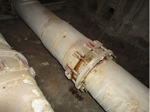
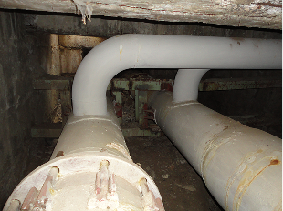
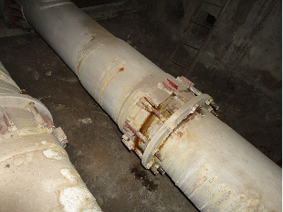
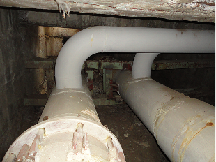
Модернизация участка теплотрассы по Аллее Роз от ТК-408 до ТК-315 от ул. 2-я Краснодарская до пр. Коммунистического и ул. Зорге в г. Ростове-на-Дону.
Выполнение проектной документации – 2017г.
Реализация – 2018г, 2019г.
Краткое описание объекта. Участок тепловой сети прокладывается в г. Ростове-на-Дону по бульв. Дружбы. Собственность – ООО «Ростовские тепловые сети». Предназначены для теплоснабжения жилых и коммунально-бытовых потребителей Западной части города общей протяженностью 654,0тр.м. Диаметр трубопроводов – Ду700. Трубы стальные с тепловой изоляцией из ППУ с защитной оболочкой из ПЭ с применением системы ОДК. Присоединенная мощность – 148,0 Гкал/час. Система теплоснабжения – двухтрубная, работающая по температурному графику 110/70℃ с рабочим давлением в системе 1,6 МПа. Способ прокладки – бесканальный.
 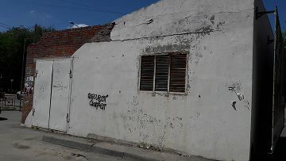
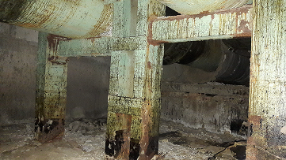
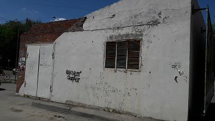
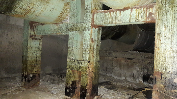
Модернизация тм по ул. Еременко ТК-627 – ТК-627/12-4 в г. Ростове-на-Дону.
Выполнение проектной документации – 2020г.
Реализация – 2021г.
Краткое описание объекта. Участок тепловой сети прокладывается в г. Ростове-на-Дону по ул. Еременко. Собственность – ООО «Ростовские тепловые сети». Предназначены для теплоснабжения жилых и коммунально-бытовых потребителей Западной части города общей протяженностью 388,0тр.м. Диаметр трубопроводов – Ду250, Ду200, Ду150, Ду100. Трубы стальные с тепловой изоляцией из ППУ с защитной оболочкой из ПЭ с применением системы ОДК. Присоединенная мощность –7,9 Гкал/час. Система теплоснабжения – двухтрубная, работающая по температурному графику 110/70℃ с рабочим давлением в системе 1,6 МПа. Способ прокладки – бесканальный.
 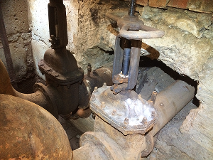
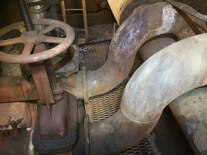
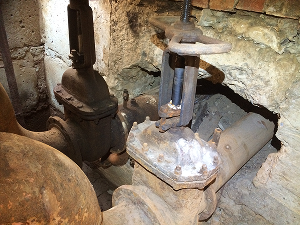
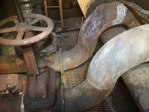
РТС. Модернизация т/м от ТК631/1 до КРП42 (ТК631/9) в г. Ростове-на-Дону.
Выполнение проектной документации – 2021г.
Реализация – 2021г.
Краткое описание объекта. Участок тепловой сети прокладывается в г. Ростове-на-Дону по ул. Малиновского. Собственность – ООО «Ростовские тепловые сети». Предназначены для теплоснабжения жилых и коммунально-бытовых потребителей Западной части города общей протяженностью 354,0тр.м. Диаметр трубопроводов – Ду200. Трубы стальные с тепловой изоляцией из ППУ с защитной оболочкой из ПЭ с применением системы ОДК. Присоединенная мощность –4,38 Гкал/час. Система теплоснабжения – двухтрубная, работающая по температурному графику 110/70℃ с рабочим давлением в системе 1,6 МПа. Способ прокладки – в канале из сборных железобетонных элементов.
 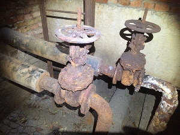
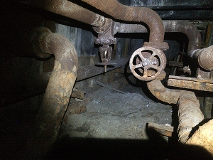
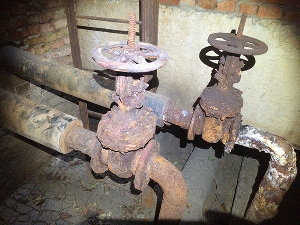
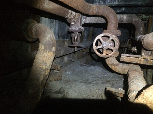
ВТС. Модернизация уч-ка т/м М-9 от ТК-I-9-5 до Уз-9-28 в г. Волгодонске 2 очередь.
Выполнение проектной документации – 2021г.
Реализация – 2021г.
Краткое описание объекта. Участок тепловой сети прокладывается в г. Волгодонске по ул. Энтузиастов. Собственность – ООО «Волгодонские тепловые сети». Предназначены для теплоснабжения жилых и коммунально-бытовых потребителей «Нового» района города общей протяженностью 568,5тр.м. Диаметр трубопроводов – Ду700. Трубы стальные с тепловой изоляцией из ППУ с защитной оболочкой из ПЭ с применением системы ОДК. Присоединительная мощность – 62,19 Гкал/час. Система теплоснабжения – двухтрубная, работающая по температурному графику 104/59℃ с рабочим давлением в системе 1,6 МПа. Способ прокладки – канальный с использованием сборных ж/б элементов.
 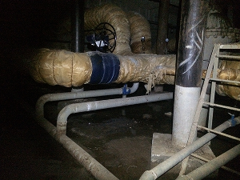
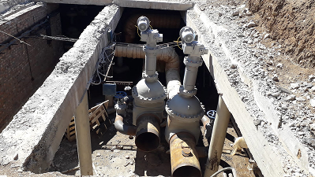
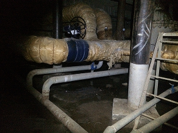
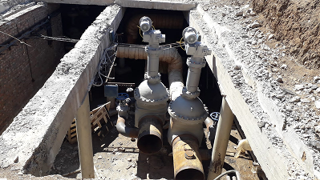
ВТС. Модернизация уч-ка т/м №7 от Ут-5-37 до НО-144 в г. Волгодонске.
Выполнение проектной документации – 2021г.
Реализация – 2021г.
Краткое описание объекта. Участок тепловой сети прокладывается в г. Волгодонске по ул. Академика Королева. Собственность – ООО «Волгодонские тепловые сети». Предназначены для теплоснабжения жилых и коммунально-бытовых потребителей «Нового» района города общей протяженностью 446,7тр.м. Диаметр трубопроводов – Ду400. Трубы стальные с тепловой изоляцией из ППУ с защитной оболочкой из ПЭ с применением системы ОДК. Присоединительная мощность – 3,06 Гкал/час. Система теплоснабжения – двухтрубная, работающая по температурному графику 104/59℃ с рабочим давлением в системе 1,6 МПа. Способ прокладки – канальный с использованием сборных ж/б элементов.
 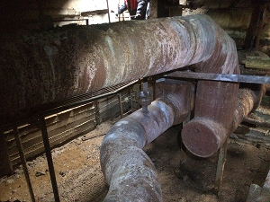
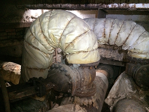
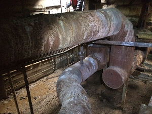
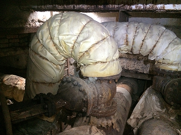